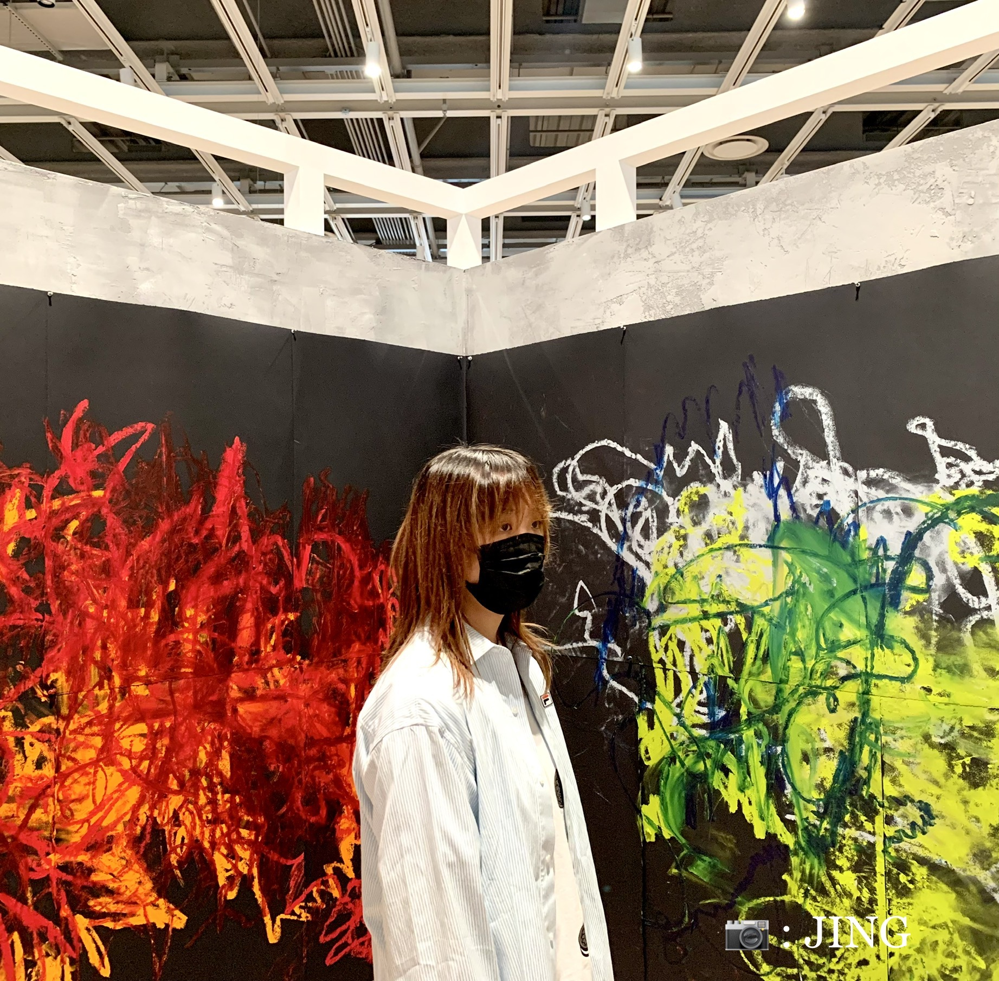
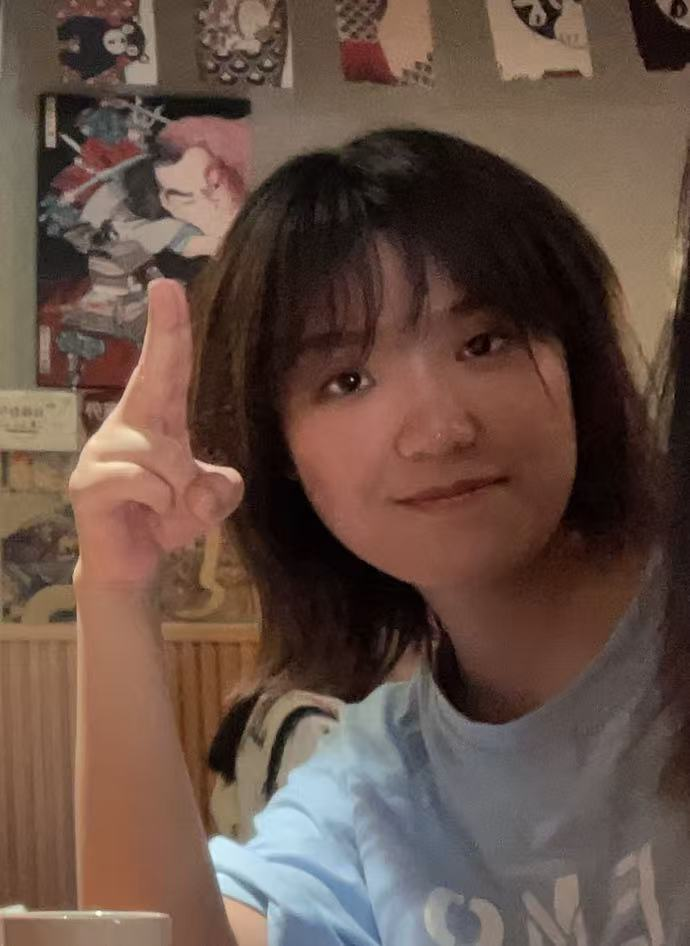
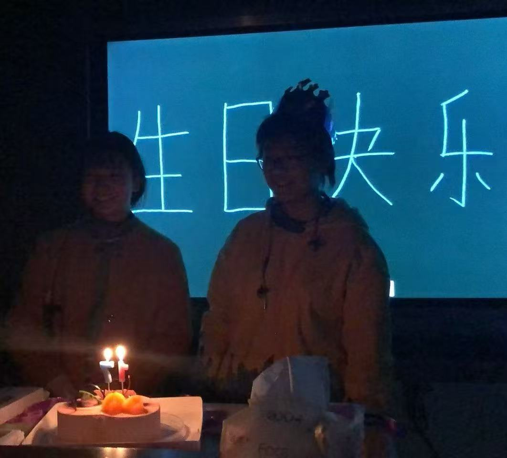
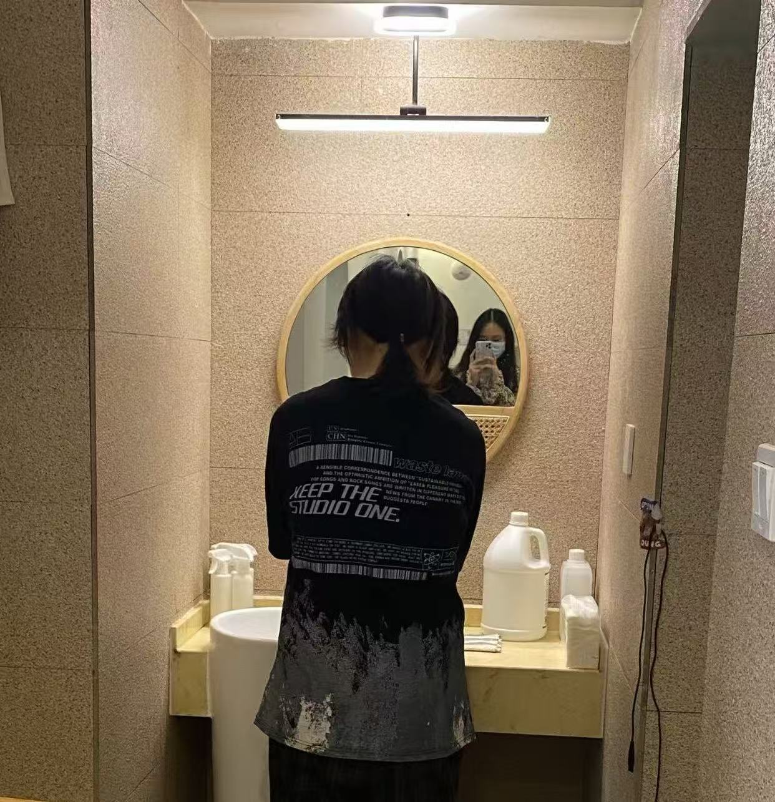
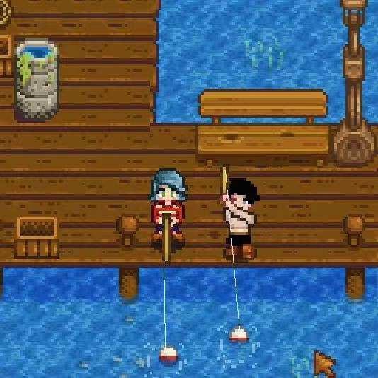
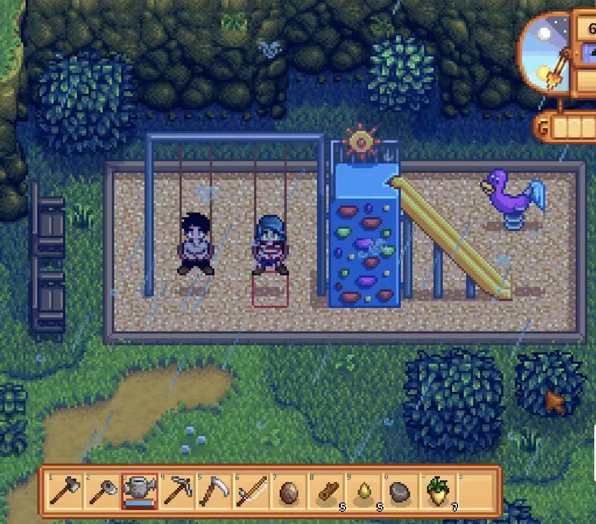
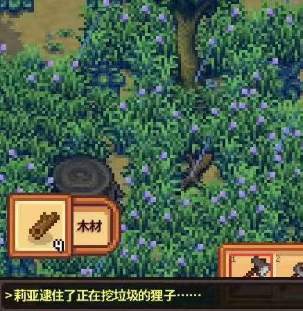
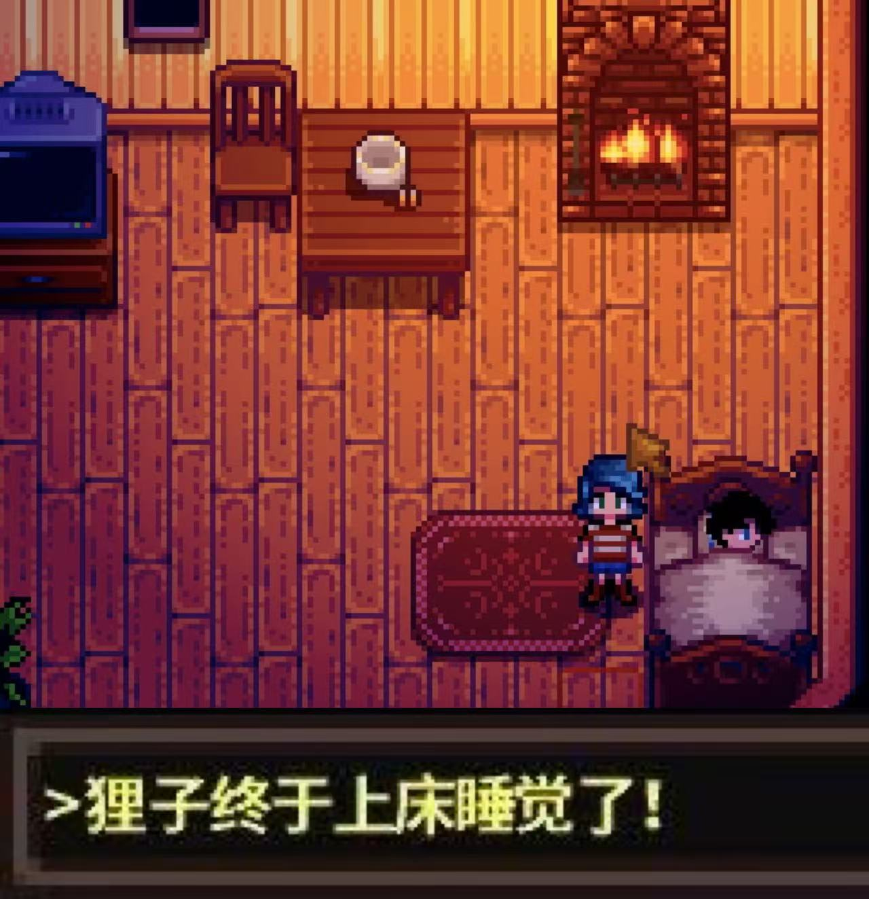

🎂妍琦
Birthday
Memories
Our Memories☀️
✨COOL

COOL✨
春 卷
裹
裹裹
裹裹裹
裹裹裹裹
在干嘛
呃
“背 影”
Hello
又在干嘛
🍓
🍑
🍰
揪住臭狸子
抓到一只大狸子
Hi👋

🫡
🤍啦啦啦!
🎉
🎈
👻
🐱

某种神秘仪式🕯️

🌈
第五人格启动！
山林不需向四季起誓，荣枯随缘
海洋不需对沙岸承诺，遇合尽兴
星露谷启动!
💫

🎣

🏡

️

“愿岁并谢 与长友兮”
← 返回 Birthday 首页
↑
🔇